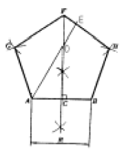
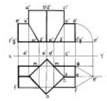
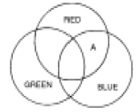
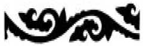
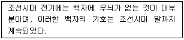

도자기공예기능사 (2005-07-17 기출문제)
1과목: 임의 구분
1. 다음 중 극단적으로 어느 한 쪽에 치우칠 때 단조롭고 무미건조하거나, 또는 혼란과 무질서를 초래하게 되는 디자인 원리는?
- 대칭과 비대칭
- 주도와 종속
- 통일과 변화
- 비례와 대비
(정답률: 74%)

2. 구성의 요소가 규칙적으로 점점 변화해 가는 상태 즉, 계측적인 변화로서 요소의 증대, 혹은 감소의 두 방향성을 가지는 리듬은?
- 점증의 리듬
- 기하학적 리듬
- 되풀이 리듬
- 자유로운 리듬
(정답률: 95%)
3. 지시선을 사용하지 않는 곳은?
- 가공법
- 반지름
- 구멍의 치수
- 부품번호
(정답률: 70%)
4. 다음 도면의 종류 중 용도에 따른 분류가 아닌 것은?
- 계획도
- 조립도
- 설명도
- 주문도
(정답률: 60%)
5. 주어진 길이(R)를 1변으로 하는 정5각형 작도에서 길이DE를 옳게 나타낸 것은?

- DE =
 AB
AB - DE = AB
- DE =
 AD
AD - DE = AD
(정답률: 75%)
6. 색의 감정적 효과에서 중량감에 가장 큰 영향을 미치는 것은?
- 채도
- 명도
- 색상
- 대비
(정답률: 83%)
7. 신예술을 의미하는 뜻으로 덩쿨이나 나무잎을 연상하는 유동적 선에 의해 환상적 구도를 시도한 예술은?
- 쎄쎄션(Sezession)
- 아트 앤드 크라프트(Art and crafts)
- 아르누보(Art Nouveau)
- 바우하우스(Bauhause)
(정답률: 86%)
8. 해칭선은 어떤 선을 사용하는가?
- 굵은 실선
- 가는 실선
- 가는 일점쇄선
- 굵은 일점쇄선
(정답률: 86%)
9. 병치혼합에 관한 설명 중 올바른 것은?
- 색을 인접시키고 떨어져서 보는 것으로 평균 명도의 중간색을 얻는 혼합이다.
- 색팽이를 회전시켜 색의 평균명도를 얻는 혼합이다.
- 색유리를 통한 스크린의 혼합이다.
- 색상환에서 반대색끼리의 혼합이다.
(정답률: 86%)
10. 다음 그림과 같은 투상도의 내용은?

- 정사각 기둥의 투상을 나타낸 것이다.
- 사각형을 기울어지게 절단한 것이다.
- 정삼각 기둥과 정사각 기둥의 상관체의 투상이다.
- 정사각형의 단면을 나타낸 투상이다.
(정답률: 96%)
11. 다음 중 신라 시대에 가장 발달하였던 공예는?
- 칠공예
- 목공예
- 도자기 공예
- 금속공예
(정답률: 85%)
12. 다음 색광혼합의 그림에서 A부분의 색은?

- White
- Cyan
- Yellow
- Magenta
(정답률: 87%)
13. 산업안전표시 가운데 안전위생지도 표지판을 제작할 때 여기에 칠하는 적당한 색은?
- 흰색 바탕에 녹색
- 녹색 바탕에 노랑
- 노랑 바탕에 검정
- 흰색 바탕에 빨강
(정답률: 76%)
14. 다음 설명 중 등각 투상법은?
- 투상면에 대해 기울어진 평행광선에 의해서 투상하여 입체적인 물체를 나타내는 것이다.
- 물체를 본 시선이 화면과 만나는 각 점을 연결하여 실제 모양과 같게 그리는 것이다.
- 인접한 두 면이 각각 화면과 기면에 평행한 그림을 말한다.
- 정면, 평면, 측면을 하나의 투상면 위에서 동시에 볼 수 있도록 그린 것이다.
(정답률: 75%)
15. 황금분할비례의 설명으로 틀린 것은?
- 길이의 비가 1 : 1.816 이다.
- 종교적인 신비로운 미의 법칙
- 통일과 변화를 얻을 수 있는 구성원리
- 조각, 건축조형에 응용된다.
(정답률: 81%)
16. 다음 배색 중 명시도가 가장 높은 배색은?
- 녹색 바탕에 흰색
- 흰색 바탕에 검정색
- 검정 바탕에 노랑색
- 검정 바탕에 흰색
(정답률: 86%)
17. 다음 중 형태변화의 조건과 가장 거리가 먼 것은?
- 보는 방향에 따라 달라진다.
- 명암에 따라 달라진다.
- 눈의 높이에 따라 달라진다.
- 원근에 따라 달라진다.
(정답률: 92%)
18. 다음 중에서 가장 맑고 깨끗한 색은?
- 탁색
- 원색
- 암색
- 명색
(정답률: 96%)
19. 빨간 쟁반 위에 놓인 귤(Orange)이 녹색(Green)기를 띄어 보이는 현상은?
- 채도대비
- 면적대비
- 색상대비
- 보색대비
(정답률: 80%)
20. 다음 그림과 같은 문양은?

- 국당초
- 모란당초
- 연당초
- 인동당초
(정답률: 77%)
2과목: 임의 구분
21. 다음에서 유사색 조화를 이루고 있는 것은?
- 빨강, 파랑
- 감청, 주황
- 연두, 녹색
- 노랑, 남색
(정답률: 97%)
22. 투시도법에 관한 설명 중 잘못된 것은?
- 원근감이 있다.
- 시점에서 멀수록 작게 표현된다.
- 치수가 정확히 표현된다.
- 입체감이 있다.
(정답률: 79%)
23. 다음 중 석회석의 주성분은?
- 실리카
- 알루미나 규산염
- 탄산칼슘
- 인산칼슘
(정답률: 83%)
24. 결정석고에서 소석고(반수석고)로 만들려면 몇 ℃에서 하소하면 되는가?
- 60℃ ~ 150℃
- 200℃ ~ 280℃
- 300℃ ~ 400℃
- 650℃ ~ 800℃
(정답률: 76%)
25. 다음 중 프릿(Frit)유약을 설명한 것은?
- 유약성분을 일부 또는 전부를 용융하여 유리상으로 한 후에, 분쇄하여 조합한 것을 말한다.
- 유약 중에서 활석을 사용한 것으로 MgO성분이 함유된 유약을 말한다.
- 유약 중에서 활석 및 석회석을 사용한 것으로 MgO와 CaO 성분이 같은 양으로 함유된 유약을 말한다.
- 장석을 주체로 석회석을 사용한 것으로 모든 유약의 기본이 된다.
(정답률: 73%)
26. 다음 중 장석의 종류가 아닌 것은?
- 석영장석
- 칼륨장석
- 석회장석
- 나트륨장석
(정답률: 65%)
27. 다음 중 가소성 점토가 아닌 것은?
- 목절점토
- 와목점토
- 볼 클레이
- 규조토
(정답률: 85%)
28. 장석이 배합된 소지에 돌로마이트를 넣었을 때 얻는 결과가 아닌 것은?
- 유리질 결합재가 생성된다.
- 균열 발생을 막을 수 있다.
- 소성 속도를 빨리하고자 할 때 효과적이다.
- 규석의 양을 줄이고 장석의 양을 늘릴 수 있다.
(정답률: 72%)
29. 다음 장석 중 유약에 주로 쓰이는 것은?
- 칼륨 장석
- 바륨 장석
- 칼슘 장석
- 나트륨 장석
(정답률: 73%)
30. 벤토나이트(Bentonite)의 가장 큰 특징은?
- 점력을 높여준다.
- 철분함량을 줄여준다.
- 유약의 용융점을 높여준다.
- 소지의 성형압을 높여준다.
(정답률: 81%)
31. 카올린계 광물에는 대부분 결정수(H2O)가 존재 한다. 카올린 광물을 가열하여 결정수가 탈수되는 온도는?
- 1100℃ 부근
- 600℃ 부근
- 200℃ 부근
- 100℃ 부근
(정답률: 72%)
32. 납석이 도자기 재료로 쓰이는 가장 큰 이유는?
- 소지의 소성 강도를 높혀준다.
- 소지의 수축을 적게 한다.
- 유약의 광택을 증가 시킨다.
- 유약의 융점을 낮춘다.
(정답률: 56%)
33. 알루미나 성분으로 되어 있지 않은 광물은?
- 루비(Ruby)
- 사파이어(Sapphire)
- 에머리(Emery)
- 대리석(Marble)
(정답률: 92%)
34. 수비의 뜻에 맞는 것은?
- 소지토의 반죽방법
- 비중차에 의한 원료 정제방법
- 원료의 부유 선광법
- 원료의 자력 선광법
(정답률: 83%)
35. 점토에 대한 설명 중 틀린 것은 ?
- 천연산의 미세한 입자의 집합체이다.
- 마르면 잘 부스러진다.
- 습하면 가소성을 나타낸다.
- 충분히 고온에서 구우면 소결한다.
(정답률: 77%)
36. 일반적인 내화점토에 대한 설명 중 틀린 것은?
- SK16 이상의 내화도를 갖는다.
- 소성색상은 대개 황색이다.
- 가소성 점토보다 진한색이다.
- 카올린 광물을 주체로 하고 있다.
(정답률: 58%)
37. 자기 원료로 사용하는 골회는 다음 중 어떤 동물의 뼈가 적당한가?
- 소
- 말
- 양
- 돼지
(정답률: 96%)
38. 주로 자기를 만들 때 주된 원료가 되지 않는 것은?
- 규조토
- 장석
- 카올린
- 규석
(정답률: 76%)
39. 실리카(Silica)의 설명 중 틀린 것은?
- 화학적으로 이산화규소(SiO2)이다.
- 지각의 암석권에서 함유량이 약 10% 정도로 적다.
- 일부는 유리 상태의 실리카로 지각에 분포한다.
- 결정질 실리카는 비중이 2.7, 경도가 7이다.
(정답률: 79%)
40. 화장토란 무엇인가?
- 유약과 같은 효과를 주는 점토의 일종
- 대개 1차 소성(초벌) 후 바르는 일종의 안료
- 일반적으로 성형 후 기면에 발라 장식적 효과를 내게하는 점토
- 2차 소성 후 장식소성효과를 높이기 위한 점토
(정답률: 89%)
3과목: 임의 구분
41. 점토소지를 발물레를 이용하여 원하는 기물을 만들 때 작업순서에 해당되지 않는 것은?
- 물레판 가운데에 점토를 힘껏 내려쳐서 붙인다.
- 점토를 올리고 내리기를 반복한다.
- 점토의 중심을 잡는다.
- 점토를 석고형에 넣는다.
(정답률: 96%)
42. 상감기법에 대하여 잘못 설명된 것은?
- 상감기법은 고려청자에서 많이 볼 수 있다.
- 상감을 넣을 때에는 붓을 사용하나 경우에 따라서 손가락으로 눌러 넣기도 한다.
- 상감을 넣어 다듬질 할 때에는 태토면이 상감면보다 낮아야 한다.
- 태토와 상감태토와의 소성온도 차이가 너무 크면 굽기에 결점이 생긴다.
(정답률: 87%)
43. 소성온도를 체크할 때 사용되는 것은?
- 알루미나
- 제겔콘
- 석회석
- 장석
(정답률: 95%)
44. 백토물을 기름에 바를 때 생기는 붓자국을 어떤 문양이라 하는가?
- 인화시문
- 조화문
- 귀얄문
- 분장문
(정답률: 91%)
45. 고려시대 수막새기와에 주로 쓰인 문양은?
- 봉황문
- 연화문
- 사자문
- 모란문
(정답률: 84%)
46. 다음 중 소성용 기구에 속하지 않는 것은?
- 버너
- 온도계
- 대차
- 스프레이 드라이어
(정답률: 87%)
47. 기물의 깊이와 안지름을 측정하는데 사용하는 +형의 대나무로 만든 도구는 ?
- 별새
- 퍼스
- 전대
- 잼대
(정답률: 87%)
48. 가리새는 무엇에 쓰이는 도구인가?
- 테라코타의 제작
- 소성
- 시유
- 굽 깍기
(정답률: 84%)
49. 다음 석고원형 제작에 관한 설명 중 틀린 것은?
- 석고를 푸는데는 표면이 매끈하고 가벼운 것이 좋다.
- 완성된 석고 원형에는 왁스를 칠하여 쉽게 떼어낼 수 있도록 한다.
- 석고가 침전되면 거품이 많이 생길 때까지 일정한 속도로 젓는다.
- 스푼을 사용하여 석고액을 부으면서 회전체를 돌린다.
(정답률: 90%)
50. 석고형을 60℃의 온도에서 손상되지 않도록 하기 위한 상대 습도는?
- 10 % 이하
- 20 % 이하
- 30 % 이하
- 60 % 이상
(정답률: 70%)
51. 다음은 무엇에 대한 설명인가?

- 백자 철화무늬
- 청화 백자
- 순 백자
- 백자 상감
(정답률: 94%)
52. 다음 성형 방법 중 수분함량이 가장 적은 소지로 만들 수 있는 성형방법은?
- 가압성형
- 물레성형
- 압출성형
- 주입성형
(정답률: 92%)
53. 석고틀을 이용하여 기물을 만들려고 할 때 점토슬립의 조건에 적합하지 못한 것은?
- 주입이 쉽도록 점도가 낮아야 한다.
- 슬립의 가라앉는 속도가 빨라야 한다.
- 주입후 건조, 수축이 적어야 한다.
- 건조강도가 커야 한다.
(정답률: 74%)
54. 초벌구이를 할 때 주의하지 않아도 될 점은?
- 기물의 건조상태를 확인한다.
- 연료량과 공기량을 확인하여 점화 소성한다.
- 유약의 두께를 점검한다.
- 기물의 적재상태를 점검한다.
(정답률: 92%)
55. 통일 신라의 유약 중 연유(鉛釉)란?
- 산화납을 응용한 유약
- 산화철을 응용한 유약
- 산화동을 응용한 유약
- 재를 수비해 흙과 섞은 유약
(정답률: 61%)
56. 다음 중 전통적인 옹기제작 방법은?
- 빚어 만들기
- 판으로 만들기
- 말아 쌓기 기법
- 틀 작업
(정답률: 95%)
57. 석기시대 토기중 홍도와 같이 붉은 색을 나타나게 할 때 사용되는 안료는?
- 산화철
- 코발트
- 크롬
- 망간
(정답률: 85%)
58. 전기물레 사용에 대한 설명 중 옳은 것은?
- 발판이 돌아가는 상태로 두고 장시간 자리를 비운다.
- 전기 스위치를 끄지 않고 자리를 비운다.
- 전기물레 사용 후 전원플러그를 끼워 둔채로 둔다.
- 회전방향을 바꿀 때 정지 후 방향전환 한다.
(정답률: 96%)
59. 붓으로 유약을 칠하는 방법은?
- 번짐효과
- 튀김법
- 흐름법
- 솔질법
(정답률: 96%)
60. 병의 내부나 깊은 화병과 같은 형태를 시유할 때 가장 적합한 시유 기법은?
- 솔질법
- 흘림법
- 분무법
- 담금법
(정답률: 92%)